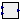
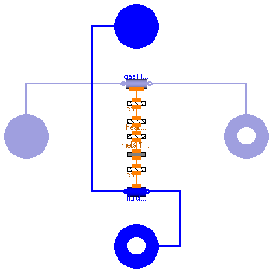
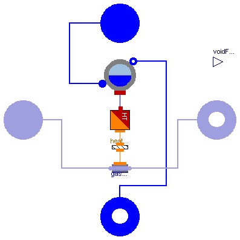
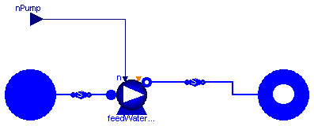

This package contains models of a simple Rankine cycle and its main components.
| Name | Description |
|---|---|
| Heat Exchanger fluid - gas | |
| Evaporator | Fire tube boiler, fixed heat transfer coefficient, no radiative heat transfer |
| PrescribedSpeedPump | Prescribed speed pump |
| PrescribedPressureCondenser | Ideal condenser with prescribed pressure |
| Plant | |
|  PID | ISA PID controller with anti-windup |
| Simulation models for the Rankine cycle example |
 ThermoPower.Examples.RankineCycle.HE
ThermoPower.Examples.RankineCycle.HE
| Type | Name | Default | Description |
|---|---|---|---|
| Integer | N_G | 2 | Number of node of the gas side |
| Integer | N_F | 2 | Number of node of the fluid side |
| MassFlowRate | gasNomFlowRate | Nominal flow rate through the gas side [kg/s] | |
| MassFlowRate | fluidNomFlowRate | Nominal flow rate through the fluid side [kg/s] | |
| Pressure | gasNomPressure | Nominal pressure in the gas side inlet [Pa] | |
| Pressure | fluidNomPressure | Nominal pressure in the fluid side inlet [Pa] | |
| Area | exchSurface_G | Exchange surface between gas - metal tube [m2] | |
| Area | exchSurface_F | Exchange surface between metal tube - fluid [m2] | |
| Area | extSurfaceTub | Total external surface of the tubes [m2] | |
| Volume | gasVol | Gas volume [m3] | |
| Volume | fluidVol | Fluid volume [m3] | |
| Volume | metalVol | Volume of the metal part in the tubes [m3] | |
| Real | rhomcm | Metal heat capacity per unit volume [J/m^3.K] | |
| ThermalConductivity | lambda | Thermal conductivity of the metal (density by specific heat capacity) [W/(m.K)] | |
| CoefficientOfHeatTransfer | gamma_G | Constant heat transfer coefficient in the gas side [W/(m2.K)] | |
| CoefficientOfHeatTransfer | gamma_F | Constant heat transfer coefficient in the fluid side [W/(m2.K)] | |
| Temp | FFtype_F | ThermoPower.Choices.Flow1D.F... | Friction Factor Type, fluid side |
| Real | Kfnom | 0 | Nominal hydraulic resistance coefficient |
| Real | Cfnom | 0 | Nominal Fanning friction factor |
| Temp | HCtype_F | ThermoPower.Choices.Flow1D.H... | Location of the hydraulic capacitance, fluid side |
| Boolean | counterCurrent | true | Counter-current flow |
| Pressure | dpnom | 0 | Nominal pressure drop fluid side (friction term only!) [Pa] |
| Density | rhonom | 0 | Nominal inlet density fluid side [kg/m3] |
| Boolean | gasQuasiStatic | false | Quasi-static model of the flue gas (mass, energy and momentum static balances |
| Initialization Conditions | |||
| Boolean | use_T | true | Select: -true- to insert the initial temperature or -false- to insert the initial specifc enthalpy |
| Boolean | SSInit | false | Steady-state initialization |
| Initialization | |||
| Temperature | Tstart_G_In | Inlet gas temperature start value [K] | |
| Temperature | Tstart_G_Out | Outlet gas temperature start value [K] | |
| Temperature | Tstart_G[N_G] | linspace(Tstart_G_In, Tstart... | Start value of gas temperature vector (initialized by default) [K] |
| Pressure | pstart_G | gasNomPressure | Pressure start value, gas side [Pa] |
| Temperature | Tstart_M_In | Inlet metal wall temperature start value [K] | |
| Temperature | Tstart_M_Out | Outlet metal wall temperature start value [K] | |
| Temperature | Tstart_M[N_F] | linspace(Tstart_M_In, Tstart... | Start value of metal wall temperature vector (initialized by default) [K] |
| Temperature | Tstart_F_In | FluidMedium.temperature_ph(f... | Inlet fluid temperature start value [K] |
| Temperature | Tstart_F_Out | FluidMedium.temperature_ph(f... | Outlet fluid temperature start value [K] |
| Temperature | Tstart_F[N_F] | linspace(Tstart_F_In, Tstart... | Start value of fluid temperature vector (initialized by default) [K] |
| SpecificEnthalpy | hstart_F_In | FluidMedium.specificEnthalpy... | Inlet fluid specific enthalpy start value [J/kg] |
| SpecificEnthalpy | hstart_F_Out | FluidMedium.specificEnthalpy... | Outlet fluid specific enthalpy start value [J/kg] |
| SpecificEnthalpy | hstart_F[N_F] | linspace(hstart_F_In, hstart... | Start value of fluid enthalpy vector (initialized by default) [J/kg] |
| Pressure | pstartin_F | fluidNomPressure | Inlet fluid pressure start value [Pa] |
| Pressure | pstartout_F | fluidNomPressure | Outlet fluid pressure start value [Pa] |
| Type | Name | Description |
|---|---|---|
| FlangeA | gasIn | |
| FlangeB | gasOut | |
| FlangeA | waterIn | |
| FlangeB | waterOut |
model HE "Heat Exchanger fluid - gas"
replaceable package FlueGasMedium = ThermoPower.Media.FlueGas extends
Modelica.Media.Interfaces.PartialMedium "Flue gas model";
replaceable package FluidMedium = ThermoPower.Water.StandardWater extends
Modelica.Media.Interfaces.PartialPureSubstance "Fluid model";
parameter Integer N_G=2 "Number of node of the gas side";
parameter Integer N_F=2 "Number of node of the fluid side";
//Nominal parameter
parameter Modelica.SIunits.MassFlowRate gasNomFlowRate
"Nominal flow rate through the gas side";
parameter Modelica.SIunits.MassFlowRate fluidNomFlowRate
"Nominal flow rate through the fluid side";
parameter Modelica.SIunits.Pressure gasNomPressure
"Nominal pressure in the gas side inlet";
parameter Modelica.SIunits.Pressure fluidNomPressure
"Nominal pressure in the fluid side inlet";
//Physical Parameter
parameter Modelica.SIunits.Area exchSurface_G
"Exchange surface between gas - metal tube";
parameter Modelica.SIunits.Area exchSurface_F
"Exchange surface between metal tube - fluid";
parameter Modelica.SIunits.Area extSurfaceTub
"Total external surface of the tubes";
parameter Modelica.SIunits.Volume gasVol "Gas volume";
parameter Modelica.SIunits.Volume fluidVol "Fluid volume";
parameter Modelica.SIunits.Volume metalVol
"Volume of the metal part in the tubes";
parameter Real rhomcm "Metal heat capacity per unit volume [J/m^3.K]";
parameter Modelica.SIunits.ThermalConductivity lambda
"Thermal conductivity of the metal (density by specific heat capacity)";
//Start value
parameter Boolean use_T = true
"Select: -true- to insert the initial temperature or -false- to insert the initial specifc enthalpy";
parameter Boolean SSInit = false "Steady-state initialization";
parameter Modelica.SIunits.Temperature Tstart_G_In
"Inlet gas temperature start value";
parameter Modelica.SIunits.Temperature Tstart_G_Out
"Outlet gas temperature start value";
parameter Modelica.SIunits.Temperature Tstart_G[N_G]=linspace(
Tstart_G_In,
Tstart_G_Out,
N_G) "Start value of gas temperature vector (initialized by default)";
parameter Modelica.SIunits.Pressure pstart_G=gasNomPressure
"Pressure start value, gas side";
parameter Modelica.SIunits.Temperature Tstart_M_In
"Inlet metal wall temperature start value";
parameter Modelica.SIunits.Temperature Tstart_M_Out
"Outlet metal wall temperature start value";
parameter Modelica.SIunits.Temperature Tstart_M[N_F]=linspace(
Tstart_M_In,
Tstart_M_Out,
N_F)
"Start value of metal wall temperature vector (initialized by default)";
parameter Modelica.SIunits.Temperature Tstart_F_In=
FluidMedium.temperature_ph(fluidNomPressure, hstart_F_In)
"Inlet fluid temperature start value";
parameter Modelica.SIunits.Temperature Tstart_F_Out=
FluidMedium.temperature_ph(fluidNomPressure, hstart_F_Out)
"Outlet fluid temperature start value";
parameter Modelica.SIunits.Temperature Tstart_F[N_F]=linspace(
Tstart_F_In,
Tstart_F_Out,
N_F)
"Start value of fluid temperature vector (initialized by default)";
parameter Modelica.SIunits.SpecificEnthalpy hstart_F_In=
FluidMedium.specificEnthalpy_pT(fluidNomPressure, Tstart_F_In)
"Inlet fluid specific enthalpy start value";
parameter Modelica.SIunits.SpecificEnthalpy hstart_F_Out=
FluidMedium.specificEnthalpy_pT(fluidNomPressure, Tstart_F_Out)
"Outlet fluid specific enthalpy start value";
parameter Modelica.SIunits.SpecificEnthalpy hstart_F[N_F]=linspace(
hstart_F_In,
hstart_F_Out,
N_F) "Start value of fluid enthalpy vector (initialized by default)";
parameter Modelica.SIunits.Pressure pstartin_F=fluidNomPressure
"Inlet fluid pressure start value";
parameter Modelica.SIunits.Pressure pstartout_F=fluidNomPressure
"Outlet fluid pressure start value";
parameter Modelica.SIunits.CoefficientOfHeatTransfer gamma_G
"Constant heat transfer coefficient in the gas side";
parameter Modelica.SIunits.CoefficientOfHeatTransfer gamma_F
"Constant heat transfer coefficient in the fluid side";
parameter Choices.Flow1D.FFtypes.Temp FFtype_F=ThermoPower.Choices.Flow1D.FFtypes.NoFriction
"Friction Factor Type, fluid side";
parameter Real Kfnom=0 "Nominal hydraulic resistance coefficient";
parameter Real Cfnom=0 "Nominal Fanning friction factor";
parameter Choices.Flow1D.HCtypes.Temp HCtype_F=ThermoPower.Choices.Flow1D.HCtypes.Downstream
"Location of the hydraulic capacitance, fluid side";
parameter Boolean counterCurrent=true "Counter-current flow";
parameter Modelica.SIunits.Pressure dpnom=0
"Nominal pressure drop fluid side (friction term only!)";
parameter Modelica.SIunits.Density rhonom=0
"Nominal inlet density fluid side";
parameter Boolean gasQuasiStatic=false
"Quasi-static model of the flue gas (mass, energy and momentum static balances";
constant Real pi=Modelica.Constants.pi;
Gas.FlangeA gasIn(redeclare package Medium = FlueGasMedium);
Gas.FlangeB gasOut(redeclare package Medium = FlueGasMedium);
Water.FlangeA waterIn(redeclare package Medium = FluidMedium);
Water.FlangeB waterOut(redeclare package Medium = FluidMedium);
Water.Flow1D fluidFlow(
Nt=1,
N=N_F,
wnom=fluidNomFlowRate,
initOpt=if SSInit then Choices.Init.Options.steadyState else Choices.Init.Options.noInit,
redeclare package Medium = FluidMedium,
L=exchSurface_F^2/(fluidVol*pi*4),
A=(fluidVol*4/exchSurface_F)^2/4*pi,
omega=fluidVol*4/exchSurface_F*pi,
Dhyd=fluidVol*4/exchSurface_F,
pstartin=pstartin_F,
pstartout=pstartout_F,
FFtype=FFtype_F,
dpnom=dpnom,
rhonom=rhonom,
HydraulicCapacitance=HCtype_F,
hstart=hstart_F,
hstartin=hstart_F_In,
hstartout=hstart_F_Out,
Kfnom=Kfnom,
Cfnom=Cfnom);
Thermal.ConvHT convHT( N=N_F,
Tstart11=Tstart_M_In,
Tstart1N=Tstart_M_Out,
Tstart21=Tstart_F_In,
Tstart2N=Tstart_F_Out,
gamma=gamma_F,
Tstart1=Tstart_M,
Tstart2=Tstart_F);
Thermal.MetalTube metalTube(
rhomcm=rhomcm,
lambda=lambda,
N=N_F,
initOpt=if SSInit then Choices.Init.Options.steadyState else Choices.Init.Options.noInit,
L=exchSurface_F^2/(fluidVol*pi*4),
rint=fluidVol*4/exchSurface_F/2,
Tstart1=Tstart_M_In,
TstartN=Tstart_M_Out,
WallRes=false,
Tstart=Tstart_M,
rext=(metalVol + fluidVol)*4/extSurfaceTub/2);
Gas.Flow1D gasFlow(
L=1,
Dhyd=1,
wnom=gasNomFlowRate,
FFtype=ThermoPower.Choices.Flow1D.FFtypes.NoFriction,
N=N_G,
A=gasVol/1,
omega=exchSurface_G/1,
initOpt=if SSInit then Choices.Init.Options.steadyState else Choices.Init.Options.noInit,
redeclare package Medium = FlueGasMedium,
QuasiStatic=gasQuasiStatic,
Tstartin=Tstart_G_In,
Tstartout=Tstart_G_Out,
pstart=pstart_G,
Tstart=Tstart_G);
Thermal.CounterCurrent cC( N=N_F,
counterCurrent=counterCurrent);
Thermal.HeatFlowDistribution heatFlowDistribution(
N=N_F,
A1=exchSurface_G,
A2=extSurfaceTub);
Thermal.ConvHT2N convHT2N(
N1=N_G,
N2=N_F,
Tstart11=Tstart_G_In,
Tstart1N=Tstart_G_Out,
Tstart21=Tstart_M_In,
Tstart2N=Tstart_M_Out,
gamma=gamma_G,
Tstart1=Tstart_G,
Tstart2=Tstart_M);
equation
connect(fluidFlow.wall, convHT.side2);
connect(gasFlow.infl, gasIn);
connect(gasFlow.outfl, gasOut);
connect(fluidFlow.outfl, waterOut);
connect(fluidFlow.infl, waterIn);
connect(heatFlowDistribution.side2, cC.side1);
connect(convHT2N.side1, gasFlow.wall);
connect(heatFlowDistribution.side1, convHT2N.side2);
connect(metalTube.int, convHT.side1);
connect(metalTube.ext, cC.side2);
end HE;

| Type | Name | Default | Description |
|---|---|---|---|
| Integer | N | 2 | Number of node of the gas side |
| MassFlowRate | gasNomFlowRate | Nominal flow rate through the gas side [kg/s] | |
| MassFlowRate | fluidNomFlowRate | Nominal flow rate through the fluid side [kg/s] | |
| Pressure | gasNomPressure | Nominal pressure in the gas side inlet [Pa] | |
| Pressure | fluidNomPressure | Nominal pressure in the fluid side inlet [Pa] | |
| Area | exchSurface | Exchange surface between gas - metal tube [m2] | |
| Volume | gasVol | Gas volume [m3] | |
| Volume | fluidVol | Fluid volume [m3] | |
| Volume | metalVol | Volume of the metal part in the tubes [m3] | |
| Density | rhom | Metal density [kg/m3] | |
| SpecificHeatCapacity | cm | Specific heat capacity of the metal [J/(kg.K)] | |
| CoefficientOfHeatTransfer | gamma | Constant heat transfer coefficient in the gas side [W/(m2.K)] | |
| Boolean | gasQuasiStatic | false | Quasi-static model of the flue gas (mass, energy and momentum static balances |
| Initialization Conditions | |||
| Boolean | SSInit | false | Steady-state initialization |
| Initialization | |||
| Temperature | Tstart_In | Inlet gas temperature start value [K] | |
| Temperature | Tstart_Out | Outlet gas temperature start value [K] | |
| Temperature | Tstart[N] | linspace(Tstart_In, Tstart_O... | Start value of gas temperature vector (initialized by default) [K] |
| Pressure | pstart | gasNomPressure | Pressure start value, gas side [Pa] |
| Type | Name | Description |
|---|---|---|
| FlangeA | waterIn | |
| FlangeB | waterOut | |
| FlangeA | gasIn | |
| FlangeB | gasOut | |
| output RealOutput | voidFraction |
model Evaporator
"Fire tube boiler, fixed heat transfer coefficient, no radiative heat transfer"
replaceable package FlueGasMedium = ThermoPower.Media.FlueGas extends
Modelica.Media.Interfaces.PartialMedium "Flue gas model";
replaceable package FluidMedium = ThermoPower.Water.StandardWater extends
Modelica.Media.Interfaces.PartialPureSubstance "Fluid model";
parameter Integer N=2 "Number of node of the gas side";
//Nominal parameter
parameter Modelica.SIunits.MassFlowRate gasNomFlowRate
"Nominal flow rate through the gas side";
parameter Modelica.SIunits.MassFlowRate fluidNomFlowRate
"Nominal flow rate through the fluid side";
parameter Modelica.SIunits.Pressure gasNomPressure
"Nominal pressure in the gas side inlet";
parameter Modelica.SIunits.Pressure fluidNomPressure
"Nominal pressure in the fluid side inlet";
//Physical Parameter
parameter Modelica.SIunits.Area exchSurface
"Exchange surface between gas - metal tube";
parameter Modelica.SIunits.Volume gasVol "Gas volume";
parameter Modelica.SIunits.Volume fluidVol "Fluid volume";
parameter Modelica.SIunits.Volume metalVol
"Volume of the metal part in the tubes";
parameter Modelica.SIunits.Density rhom "Metal density";
parameter Modelica.SIunits.SpecificHeatCapacity cm
"Specific heat capacity of the metal";
//Start value
parameter Boolean SSInit = false "Steady-state initialization";
parameter Modelica.SIunits.Temperature Tstart_In
"Inlet gas temperature start value";
parameter Modelica.SIunits.Temperature Tstart_Out
"Outlet gas temperature start value";
parameter Modelica.SIunits.Temperature Tstart[N]=linspace(
Tstart_In,
Tstart_Out,
N) "Start value of gas temperature vector (initialized by default)";
parameter Modelica.SIunits.Pressure pstart=gasNomPressure
"Pressure start value, gas side";
parameter Modelica.SIunits.CoefficientOfHeatTransfer gamma
"Constant heat transfer coefficient in the gas side";
parameter Boolean gasQuasiStatic=false
"Quasi-static model of the flue gas (mass, energy and momentum static balances";
constant Real pi=Modelica.Constants.pi;
ThermoPower.Water.Drum2States water(
Vdcr=0,
cm=cm,
Mmdcr=0,
redeclare package Medium = FluidMedium,
Vd=fluidVol,
Mmd=metalVol*rhom,
pstart=fluidNomPressure,
Vldstart=fluidVol*0.8,
initOpt=if SSInit then Choices.Init.Options.steadyState else Choices.Init.Options.noInit);
ThermoPower.Thermal.HT_DHT adapter(N=N, exchangeSurface=exchSurface);
ThermoPower.Thermal.ConvHT heatTransfer_ext(N=N, gamma=gamma);
Water.FlangeA waterIn(redeclare package Medium = FluidMedium);
Water.FlangeB waterOut(redeclare package Medium = FluidMedium);
Gas.FlangeA gasIn(redeclare package Medium = FlueGasMedium);
Gas.FlangeB gasOut(redeclare package Medium = FlueGasMedium);
Gas.Flow1D gasFlow(
L=1,
Dhyd=1,
wnom=gasNomFlowRate,
FFtype=ThermoPower.Choices.Flow1D.FFtypes.NoFriction,
A=gasVol/1,
redeclare package Medium = FlueGasMedium,
QuasiStatic=gasQuasiStatic,
N=N,
omega=exchSurface/1,
Tstartin=Tstart_In,
Tstartout=Tstart_Out,
Tstart=Tstart,
pstart=pstart,
initOpt=if SSInit then Choices.Init.Options.steadyState else Choices.Init.Options.noInit);
Modelica.Blocks.Interfaces.RealOutput voidFraction;
equation
voidFraction = 1-water.Vld/water.Vd;
connect(heatTransfer_ext.side2, adapter.DHT_port);
connect(water.feed, waterIn);
connect(water.steam, waterOut);
connect(adapter.HT_port, water.heat);
connect(gasFlow.wall, heatTransfer_ext.side1);
connect(gasFlow.infl, gasIn);
connect(gasFlow.outfl, gasOut);
end Evaporator;

| Type | Name | Default | Description |
|---|---|---|---|
| VolumeFlowRate | q_nom[3] | Nominal volume flow rates [m3/s] | |
| Height | head_nom[3] | Nominal heads [m] | |
| Density | rho_nom | Nominal density [kg/m3] | |
| AngularVelocity_rpm | n0 | Nominal rpm [rev/min] | |
| Pressure | nominalSteamPressure | Nominal live steam pressure [Pa] | |
| Pressure | nominalCondensationPressure | Nominal condensation pressure [Pa] | |
| MassFlowRate | nominalSteamFlow | Nominal steam mass flow rate [kg/s] | |
| SpecificEnthalpy | hstart | Fluid Specific Enthalpy Start Value [J/kg] | |
| Boolean | SSInit | false | Steady-state initialization |
| Type | Name | Description |
|---|---|---|
| FlangeA | inlet | |
| FlangeB | outlet | |
| input RealInput | nPump |
model PrescribedSpeedPump "Prescribed speed pump"
replaceable package FluidMedium =
Modelica.Media.Interfaces.PartialTwoPhaseMedium;
parameter Modelica.SIunits.VolumeFlowRate q_nom[3]
"Nominal volume flow rates";
parameter Modelica.SIunits.Height head_nom[3] "Nominal heads";
parameter Modelica.SIunits.Density rho_nom "Nominal density";
parameter Modelica.SIunits.Conversions.NonSIunits.AngularVelocity_rpm n0
"Nominal rpm";
parameter Modelica.SIunits.Pressure nominalSteamPressure
"Nominal live steam pressure";
parameter Modelica.SIunits.Pressure nominalCondensationPressure
"Nominal condensation pressure";
parameter Modelica.SIunits.MassFlowRate nominalSteamFlow
"Nominal steam mass flow rate";
parameter Modelica.SIunits.SpecificEnthalpy hstart
"Fluid Specific Enthalpy Start Value";
parameter Boolean SSInit = false "Steady-state initialization";
function flowCharacteristic =
ThermoPower.Functions.PumpCharacteristics.quadraticFlow (
q_nom = q_nom, head_nom = head_nom);
ThermoPower.Water.FlangeA inlet(redeclare package Medium = FluidMedium);
ThermoPower.Water.FlangeB outlet(redeclare package Medium = FluidMedium);
Water.Pump feedWaterPump(
redeclare function flowCharacteristic = flowCharacteristic,
pin_start=nominalCondensationPressure,
pout_start=nominalSteamPressure,
wstart=nominalSteamFlow,
n0=n0,
hstart=hstart,
redeclare package Medium = FluidMedium,
initOpt=if SSInit then Choices.Init.Options.steadyState else Choices.Init.Options.noInit);
PowerPlants.HRSG.Components.StateReader_water stateInlet(redeclare package
Medium = FluidMedium);
PowerPlants.HRSG.Components.StateReader_water stateOutlet(redeclare package
Medium = FluidMedium);
Modelica.Blocks.Interfaces.RealInput nPump;
equation
connect(feedWaterPump.infl, stateInlet.outlet);
connect(stateInlet.inlet, inlet);
connect(stateOutlet.inlet, feedWaterPump.outfl);
connect(stateOutlet.outlet, outlet);
connect(nPump, feedWaterPump.in_n);
end PrescribedSpeedPump;
| Type | Name | Default | Description |
|---|---|---|---|
| Pressure | p | Nominal inlet pressure [Pa] | |
| Volume | Vtot | 10 | Total volume of the fluid side [m3] |
| Volume | Vlstart | 0.15*Vtot | Start value of the liquid water volume [m3] |
| Type | Name | Description |
|---|---|---|
| FlangeA | steamIn | |
| FlangeB | waterOut |
model PrescribedPressureCondenser
"Ideal condenser with prescribed pressure"
replaceable package Medium = Water.StandardWater extends
Modelica.Media.Interfaces.PartialMedium "Medium model";
//Parameters
parameter Modelica.SIunits.Pressure p "Nominal inlet pressure";
parameter Modelica.SIunits.Volume Vtot=10 "Total volume of the fluid side";
parameter Modelica.SIunits.Volume Vlstart=0.15*Vtot
"Start value of the liquid water volume";
//Variables
Modelica.SIunits.Density rhol "Density of saturated liquid";
Modelica.SIunits.Density rhov "Density of saturated steam";
Medium.SaturationProperties sat "Saturation properties";
Medium.SpecificEnthalpy hl "Specific enthalpy of saturated liquid";
Modelica.SIunits.Mass M "Total mass, steam+liquid";
Modelica.SIunits.Mass Ml "Liquid mass";
Modelica.SIunits.Mass Mv "Steam mass";
Modelica.SIunits.Volume Vl(start=Vlstart) "Liquid volume";
Modelica.SIunits.Volume Vv "Steam volume";
Modelica.SIunits.Energy E "Internal energy";
Modelica.SIunits.Power Q "Thermal power";
//Connectors
Water.FlangeA steamIn( redeclare package Medium = Medium);
Water.FlangeB waterOut( redeclare package Medium = Medium);
equation
steamIn.p = p;
steamIn.hAB = hl;
sat.psat = p;
sat.Tsat = Medium.saturationTemperature(p);
hl = Medium.bubbleEnthalpy(sat);
waterOut.p = p;
waterOut.hBA = hl;
rhol = Medium.bubbleDensity(sat);
rhov = Medium.density_ph(steamIn.p,steamIn.hBA);
Ml = Vl*rhol;
Mv = Vv*rhov;
Vtot= Vv+Vl;
M = Ml + Mv;
E = Ml*hl + Mv*steamIn.hBA - p*Vtot;
//Energy and Mass Bilances
der(M) = steamIn.w + waterOut.w;
der(E) = steamIn.w*steamIn.hBA + waterOut.w*hl - Q;
end PrescribedPressureCondenser;
| Type | Name | Default | Description |
|---|---|---|---|
| Boolean | SSInit | false | Steady-state initialization |
| Type | Name | Description |
|---|---|---|
| output RealOutput | generatedPower | |
| input RealInput | gasFlowRate | |
| input RealInput | gasTemperature | |
| input RealInput | nPump | |
| output RealOutput | voidFraction |
model Plant
import ThermoPower;
replaceable package FlueGas = ThermoPower.Media.FlueGas extends
Modelica.Media.Interfaces.PartialMedium "Flue gas model";
replaceable package Water = ThermoPower.Water.StandardWater extends
Modelica.Media.Interfaces.PartialPureSubstance "Fluid model";
parameter Boolean SSInit = false "Steady-state initialization";
ThermoPower.Examples.RankineCycle.PrescribedPressureCondenser condenser(p=
5390, redeclare package Medium = Water);
PrescribedSpeedPump prescribedSpeedPump(
rho_nom=1000,
n0=1500,
nominalSteamPressure=30e5,
nominalCondensationPressure=0.5e5,
nominalSteamFlow=55,
q_nom={0,0.055,0.1},
head_nom={600,300,0},
hstart=1.48e5,
redeclare package FluidMedium = Water,
SSInit=SSInit);
Modelica.Blocks.Continuous.FirstOrder temperatureActuator(
k=1,
y_start=750,
T=4,
initType=if SSInit then Modelica.Blocks.Types.Init.SteadyState else
Modelica.Blocks.Types.Init.NoInit);
Modelica.Blocks.Continuous.FirstOrder powerSensor(
k=1,
T=1,
y_start=56.8e6,
initType=if SSInit then Modelica.Blocks.Types.Init.SteadyState else
Modelica.Blocks.Types.Init.NoInit);
Modelica.Blocks.Interfaces.RealOutput generatedPower;
Modelica.Blocks.Interfaces.RealInput gasFlowRate;
Modelica.Blocks.Interfaces.RealInput gasTemperature;
Modelica.Blocks.Continuous.FirstOrder gasFlowActuator(
k=1,
T=4,
y_start=500,
initType=if SSInit then Modelica.Blocks.Types.Init.SteadyState else
Modelica.Blocks.Types.Init.NoInit);
Modelica.Blocks.Continuous.FirstOrder nPumpActuator(
k=1,
initType=if SSInit then Modelica.Blocks.Types.Init.SteadyState else
Modelica.Blocks.Types.Init.NoInit,
T=2,
y_start=1500);
Modelica.Blocks.Interfaces.RealInput nPump;
Modelica.Blocks.Interfaces.RealOutput voidFraction;
Modelica.Blocks.Continuous.FirstOrder voidFractionSensor(
k=1,
T=1,
initType=if SSInit then Modelica.Blocks.Types.Init.SteadyState else
Modelica.Blocks.Types.Init.NoInit,
y_start=0.2);
Electrical.Generator generator(J=10000, initOpt=if SSInit then Choices.Init.Options.steadyState else
Choices.Init.Options.noInit);
Electrical.NetworkGrid_Pmax network(
J=10000,
Pmax=100e6,
deltaStart=0.4,
initOpt=if SSInit then Choices.Init.Options.steadyState else Choices.Init.Options.noInit);
ThermoPower.Water.SteamTurbineStodola steamTurbine(
pstart_in=30e5,
pstart_out=0.5e5,
wstart=55,
wnom=55,
hstartin=3.33e6,
hstartout=2.67e6,
Kt=0.0104,
redeclare package Medium = Water);
Modelica.Mechanics.Rotational.Sensors.PowerSensor powerSensor1;
ThermoPower.PowerPlants.HRSG.Components.HE economizer(
redeclare package FluidMedium = Water,
redeclare package FlueGasMedium = FlueGas,
N_G=3,
N_F=6,
exchSurface_G=40095.9,
exchSurface_F=3439.389,
extSurfaceTub=3888.449,
gasVol=10,
fluidVol=28.977,
metalVol=8.061,
rhomcm=7900*578.05,
lambda=20,
fluidFlow(FFtype=ThermoPower.Choices.Flow1D.FFtypes.Kfnom, Kfnom=150),
gasNomFlowRate=500,
gasNomPressure=101325,
fluidNomFlowRate=55,
fluidNomPressure=30e5,
gamma_G=30,
gamma_F=3000,
Tstart_G_In=500,
Tstart_G_Out=417,
Tstart_M_In=307,
Tstart_M_Out=488,
Tstart_F_In=307,
Tstart_F_Out=488,
SSInit=SSInit);
ThermoPower.Examples.RankineCycle.Evaporator evaporator(
redeclare package FluidMedium = Water,
redeclare package FlueGasMedium = FlueGas,
gasVol=10,
fluidVol=12.400,
metalVol=4.801,
gasNomFlowRate=500,
fluidNomFlowRate=55,
gasNomPressure=101325,
fluidNomPressure=30e5,
SSInit=SSInit,
N=4,
rhom=7900,
cm=578.05,
gamma=85,
exchSurface=24402,
Tstart_In=700,
Tstart_Out=500,
heatTransfer_ext(
Tstart11=700,
Tstart21=500,
Tstart2N=501,
Tstart1N=502));
ThermoPower.PowerPlants.HRSG.Components.HE superheater(
redeclare package FluidMedium = Water,
redeclare package FlueGasMedium = FlueGas,
N_G=3,
N_F=7,
exchSurface_G=2314.8,
exchSurface_F=450.218,
extSurfaceTub=504.652,
gasVol=10,
fluidVol=4.468,
metalVol=1.146,
rhomcm=7900*578.05,
lambda=20,
gasNomPressure=101325,
fluidFlow(FFtype=ThermoPower.Choices.Flow1D.FFtypes.Kfnom, Kfnom=150),
gasNomFlowRate=500,
gamma_G=90,
gamma_F=6000,
fluidNomFlowRate=55,
fluidNomPressure=30e5,
Tstart_G_In=750,
Tstart_G_Out=700,
Tstart_M_In=513,
Tstart_M_Out=690,
Tstart_F_In=513,
Tstart_F_Out=690,
SSInit=SSInit);
ThermoPower.PowerPlants.HRSG.Components.StateReader_gas stateGasInlet(
redeclare package
Medium = FlueGas);
ThermoPower.PowerPlants.HRSG.Components.StateReader_gas
stateGasInletEvaporator(
redeclare package Medium = FlueGas);
ThermoPower.PowerPlants.HRSG.Components.StateReader_gas
stateGasInletEconomizer(
redeclare package Medium = FlueGas);
ThermoPower.PowerPlants.HRSG.Components.StateReader_gas stateGasOutlet(
redeclare package
Medium = FlueGas);
ThermoPower.PowerPlants.HRSG.Components.StateReader_water
stateWaterSuperheater_in(
redeclare package Medium = Water);
ThermoPower.PowerPlants.HRSG.Components.StateReader_water
stateWaterSuperheater_out(
redeclare package Medium = Water);
ThermoPower.PowerPlants.HRSG.Components.StateReader_water
stateWaterEvaporator_in(
redeclare package Medium = Water);
ThermoPower.PowerPlants.HRSG.Components.StateReader_water
stateWaterEconomizer_in(
redeclare package Medium = Water);
ThermoPower.Gas.SourceW sourceW_gas(
T=750,
w0=500,
redeclare package Medium = FlueGas);
ThermoPower.Gas.SinkP sinkP_gas( T=400, redeclare
package Medium = FlueGas);
equation
connect(prescribedSpeedPump.inlet, condenser.waterOut);
connect(generatedPower, powerSensor.y);
connect(gasFlowActuator.u, gasFlowRate);
connect(temperatureActuator.u, gasTemperature);
connect(nPumpActuator.u, nPump);
connect(voidFraction, voidFractionSensor.y);
connect(powerSensor1.flange_a, steamTurbine.shaft_b);
connect(stateGasInlet.inlet,sourceW_gas. flange);
connect(generator.shaft, powerSensor1.flange_b);
connect(network.powerConnection, generator.powerConnection);
connect(condenser.steamIn, steamTurbine.outlet);
connect(prescribedSpeedPump.outlet, stateWaterEconomizer_in.inlet);
connect(stateWaterEconomizer_in.outlet, economizer.waterIn);
connect(economizer.waterOut, stateWaterEvaporator_in.inlet);
connect(stateWaterEvaporator_in.outlet, evaporator.waterIn);
connect(economizer.gasIn, stateGasInletEconomizer.outlet);
connect(stateGasInletEconomizer.inlet, evaporator.gasOut);
connect(sinkP_gas.flange, stateGasOutlet.outlet);
connect(stateGasOutlet.inlet, economizer.gasOut);
connect(evaporator.gasIn, stateGasInletEvaporator.outlet);
connect(stateGasInletEvaporator.inlet, superheater.gasOut);
connect(evaporator.waterOut, stateWaterSuperheater_in.inlet);
connect(stateWaterSuperheater_in.outlet, superheater.waterIn);
connect(superheater.waterOut, stateWaterSuperheater_out.inlet);
connect(stateWaterSuperheater_out.outlet, steamTurbine.inlet);
connect(superheater.gasIn, stateGasInlet.outlet);
connect(powerSensor.u, powerSensor1.power);
connect(voidFractionSensor.u, evaporator.voidFraction);
connect(gasFlowActuator.y, sourceW_gas.in_w0);
connect(temperatureActuator.y, sourceW_gas.in_T);
connect(nPumpActuator.y, prescribedSpeedPump.nPump);
end Plant;
 ThermoPower.Examples.RankineCycle.PID
ThermoPower.Examples.RankineCycle.PID
| Type | Name | Default | Description |
|---|---|---|---|
| Real | Kp | Proportional gain (normalised units) | |
| Time | Ti | Integral time [s] | |
| Time | Td | 0 | Derivative time [s] |
| Real | Nd | 1 | Derivative action up to Nd / Td rad/s |
| Real | Ni | 1 | Ni*Ti is the time constant of anti-windup compensation |
| Real | b | 1 | Setpoint weight on proportional action |
| Real | c | 0 | Setpoint weight on derivative action |
| Real | PVmin | Minimum value of process variable for scaling | |
| Real | PVmax | Maximum value of process variable for scaling | |
| Real | CSmin | Minimum value of control signal for scaling | |
| Real | CSmax | Maximum value of control signal for scaling | |
| Real | PVstart | 0.5 | Start value of PV (scaled) |
| Real | CSstart | 0.5 | Start value of CS (scaled) |
| Boolean | steadyStateInit | false |
| Type | Name | Description |
|---|---|---|
| input RealInput | PV | Process variable signal |
| output RealOutput | CS | Control signal |
| input RealInput | SP | Set point signal |
model PID "ISA PID controller with anti-windup"
parameter Real Kp "Proportional gain (normalised units)";
parameter Time Ti "Integral time";
parameter Time Td = 0 "Derivative time";
parameter Real Nd = 1 "Derivative action up to Nd / Td rad/s";
parameter Real Ni = 1
"Ni*Ti is the time constant of anti-windup compensation";
parameter Real b = 1 "Setpoint weight on proportional action";
parameter Real c = 0 "Setpoint weight on derivative action";
parameter Real PVmin "Minimum value of process variable for scaling";
parameter Real PVmax "Maximum value of process variable for scaling";
parameter Real CSmin "Minimum value of control signal for scaling";
parameter Real CSmax "Maximum value of control signal for scaling";
parameter Real PVstart = 0.5 "Start value of PV (scaled)";
parameter Real CSstart = 0.5 "Start value of CS (scaled)";
parameter Boolean steadyStateInit = false;
Real P "Proportional action / Kp";
Real I(start = CSstart/Kp) "Integral action / Kp";
Real D "Derivative action / Kp";
Real Dx(start = c*PVstart - PVstart) "State of approximated derivator";
Real PVs "Process variable scaled in per unit";
Real SPs "Setpoint variable scaled in per unit";
Real CSs(start = CSstart) "Control signal scaled in per unit";
Real CSbs(start = CSstart)
"Control signal scaled in per unit before saturation";
Real track "Tracking signal for anti-windup integral action";
Modelica.Blocks.Interfaces.RealInput PV "Process variable signal";
Modelica.Blocks.Interfaces.RealOutput CS "Control signal";
Modelica.Blocks.Interfaces.RealInput SP "Set point signal";
equation
// Scaling
SPs=(SP-PVmin)/(PVmax-PVmin);
PVs=(PV-PVmin)/(PVmax-PVmin);
CS = CSmin + CSs*(CSmax-CSmin);
// Controller actions
P = b*SPs - PVs;
if Ti>0 then
Ti*der(I) = SPs - PVs + track;
else
I = 0;
end if;
if Td > 0 then
Td/Nd*der(Dx) + Dx = c*SPs - PVs "State equation of approximated derivator";
D = Nd*((c*SPs - PVs) - Dx) "Output equation of approximated derivator";
else
Dx = 0;
D = 0;
end if;
CSbs = Kp*(P+I+D) "Control signal before saturation";
CSs = smooth(0, if CSbs > 1 then 1 else if CSbs < 0 then 0 else CSbs)
"Saturated control signal";
track = (CSs-CSbs)/(Kp*Ni);
initial equation
if steadyStateInit then
if Ti > 0 then
der(I) = 0;
end if;
if Td > 0 then
D = 0;
end if;
end if;
end PID;